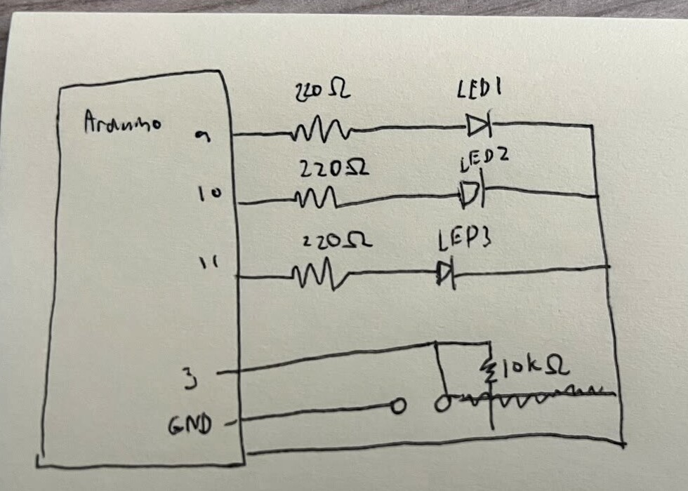
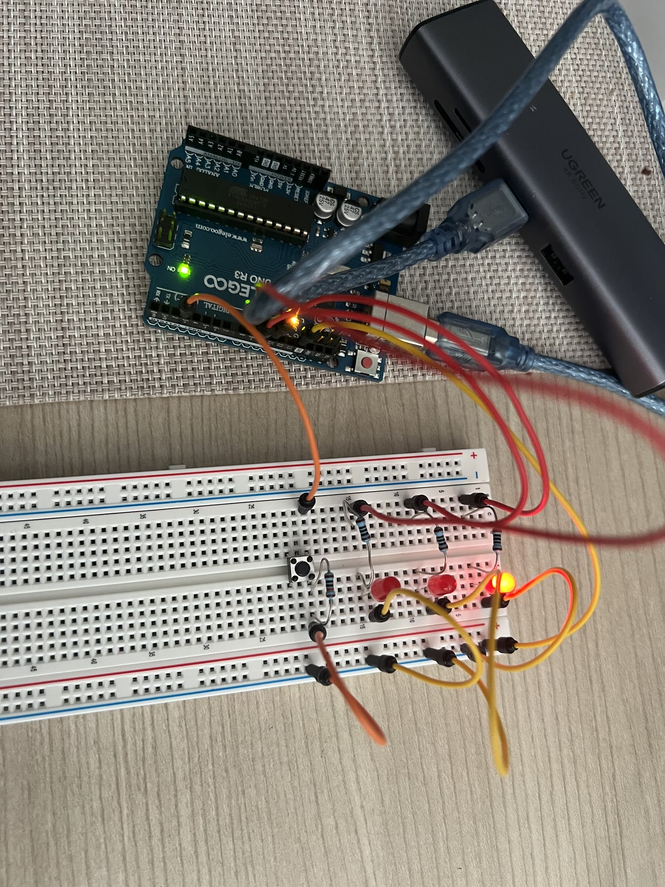
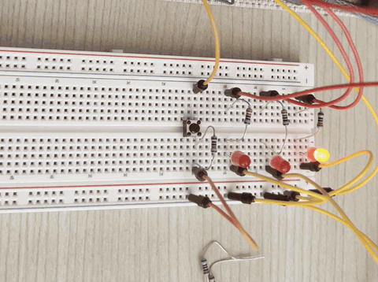
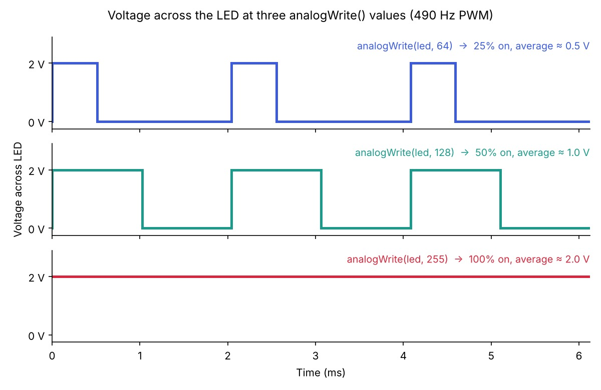

analogWrite(), and its own 220 Ω resistor to
limit its current to about 13.6 mA. The push button connects
pin 3 to GND through a 10 kΩ resistor. No 5V wire is
needed: pin 3 uses the Arduino's built-in pull-up resistor
(INPUT_PULLUP), so it reads HIGH when the button is
released and LOW when it is pressed.
VR = 5 V − 2 V = 3 V
R = 3 V / 0.020 A = 150 Ω → used 220 Ω
I = 3 V / 220 Ω ≈ 13.6 mA per LED
P = 3 V × 0.0136 A ≈ 0.041 W (under the 0.25 W rating)
Internal pull-up ≈ 35 kΩ (20–50 kΩ on the ATmega328P)
I = 5 V / (35 kΩ + 10 kΩ) ≈ 0.11 mA when the button is pressed
Vpin 3 = 5 V × 10 kΩ / 45 kΩ ≈ 1.1 V when pressed (below the 1.5 V LOW threshold, so it reads LOW)
Without a pull-up or pull-down, pin 3 would "float" and read random
values while the button is released. INPUT_PULLUP turns on
a resistor inside the Arduino that connects pin 3 to 5V, so the pin
reads HIGH until the button pulls it toward GND. That internal resistor
already keeps the current tiny (about 0.11 mA). I added the
10 kΩ resistor in series with the button as protection: if
pin 3 were ever accidentally set as an OUTPUT driving HIGH, pressing
the button would short the pin straight to GND. The 10 kΩ
limits that worst case to 5 V / 10 kΩ = 0.5 mA,
which is safe for the pin.

// Pins for the three LEDs (all PWM pins, marked ~, so they can fade)
const int ledPins[] = {9, 10, 11};
const int numLeds = 3;
const int buttonPin = 3;
void setup() {
for (int i = 0; i < numLeds; i++) {
pinMode(ledPins[i], OUTPUT);
}
pinMode(buttonPin, INPUT_PULLUP);
}
void loop() {
if (digitalRead(buttonPin) == LOW) {
for (int lap = 0; lap < 3; lap++) {
for (int i = 0; i < numLeds; i++) {
digitalWrite(ledPins[i], HIGH);
delay(100);
digitalWrite(ledPins[i], LOW);
}
}
for (int brightness = 255; brightness >= 0; brightness--) {
for (int i = 0; i < numLeds; i++) {
analogWrite(ledPins[i], brightness);
}
delay(5);
}
} else {
digitalWrite(ledPins[0], LOW);
digitalWrite(ledPins[1], LOW);
analogWrite(ledPins[2], 20);
}
}One button press runs for about 2.2 seconds: the chase is 3 laps × 3 LEDs × 100 ms = 0.9 s, and the fade is 256 steps × 5 ms ≈ 1.3 s. Holding the button down repeats the process.


3 LEDs × 13.6 mA = 40.9 mA
+ button 0.11 mA (while pressed) = ≈ 41.0 mA total
This is below the Arduino's limits. Each LED's 13.6 mA is under the 20 mA recommended (40 mA absolute maximum) per pin, and the 41.0 mA total is far under the ATmega328P's 200 mA limit for the whole chip.
Circuit only: 1200 mAh / 41.0 mA ≈ 29 hours
Including the Uno board itself (≈45 mA): 1200 mAh / 86.0 mA ≈ 14 hours
I measured __ V across LED 3 while it was fully on. The typical forward voltage for a red LED is about 1.8–2.2 V, and I used 2.0 V in my calculations so my measurement is close to the expected value.
Yes I did use AI to turn my files to the correct type. I used it to draft the HTML too by inputing the google docs that I wrote and the calculations and the graphs to turn it into a HTML.
[Add 2–3 sentences of your own reflection: I think the practice in class that I had building the curcuits were really helpful and I use less time to build the curcuits. However, I think the coding part I have to search up more on Google how to each function would work so it takes more time.